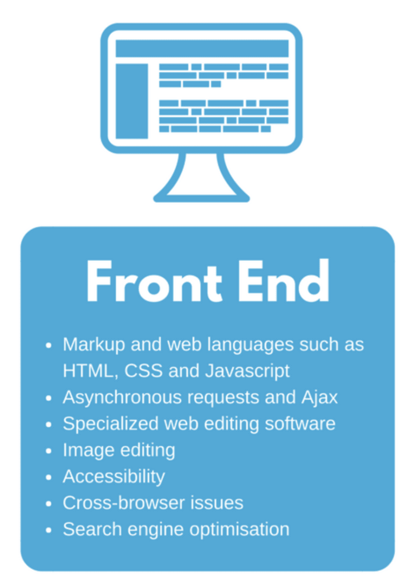
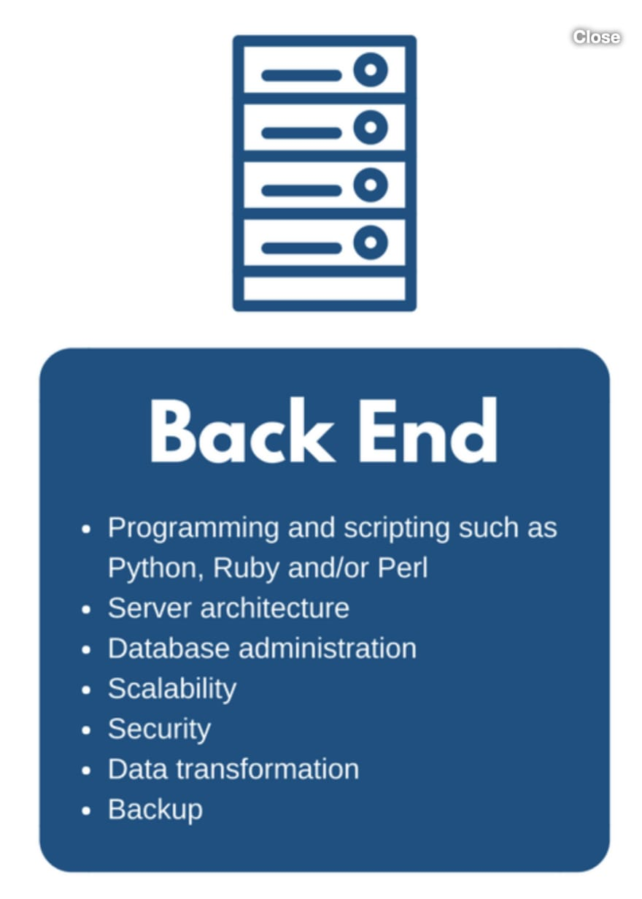
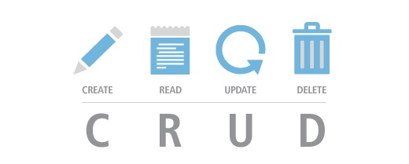
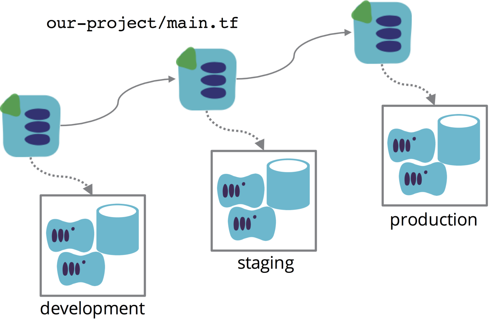
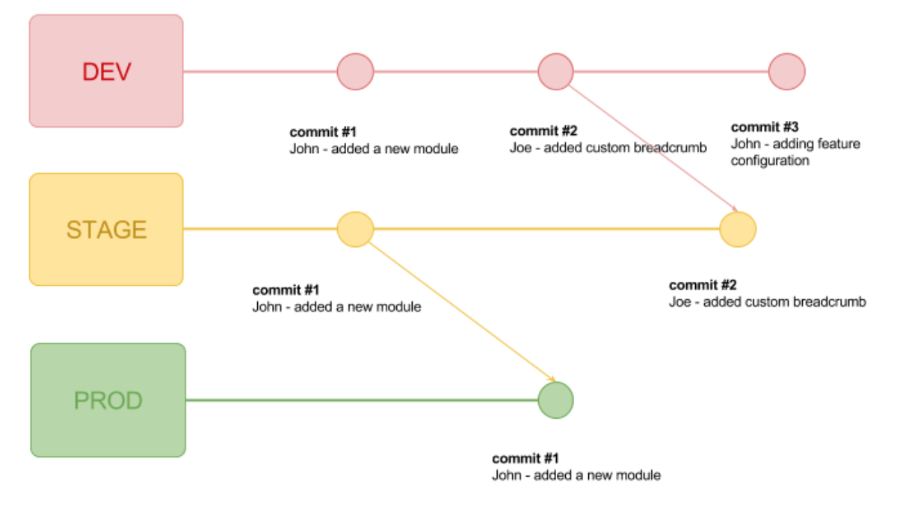
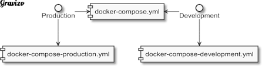
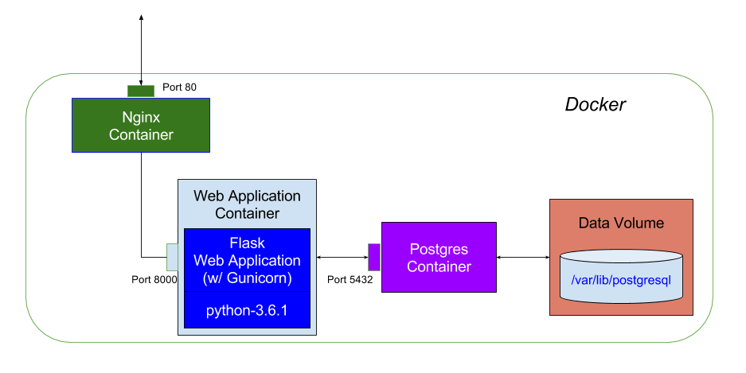
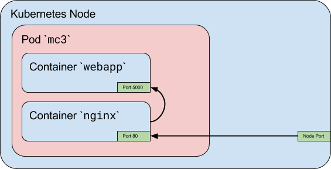

S S B W
Sistemas Software Basados en Web
Aplicaciones distribuidas
Cliente-Servidor
|  |  |
Cliente - Servidor
La aplicación está distribuida en dos partes, que se ejecutan en máquinas distintas:
| Cliente | Servidor |
|---|---|
| Proactivo, inicia la comunicación | Reactivo, esta esperando requerimientos para contestarlos |
| Hace requerimientos a un servidor | Responde a varios clientes |
| Se encarga de la interface de usuario | Hace el resto de la lógica del programa y la comunicación con la base de datos |
Varios (tipos de) clientes atendidos por un solo servidor
El cliente es proactivo, y el servidor reactivo
La comunicación puede ser síncrona o asíncrona
Web Apps
- El cliente ejecuta en un navegador, o como apliación nativa mas raramente
- por lo tanto es independiente de la plataforma, se ejecuta en cualquier S.O. incluyendo móviles
- y se adaptan fácilmente a cambios en los dispositivos de acceso a la red
- Se puede usar desde cualquier sitio, remotamente
- Mantenimiento centralizado
- Se puede poner como Software As a Service
- Se implantan en la nube, (escalabilidad, backup, ...)
Desde los 90: La World Wide Web
- 1991 HTTP
- 1991 HTML
- 1995 HTML 2.0 forms, upload files, CGIs (con Perl)
- 1996 Javascript programación en el navegador
- 1997 HTML 3.2 más lenguajes de script PHP, Python
- 1999 HTML 4.1 extensiones, ... flash player
- 1996 AJAX HTML "dinámico"
- 2000 XML, XHTML 4.1
- 2005 Primeros Frameworks MVC Ruby on Rails, Django
- 2006 Librerías JS jQuery
- 2007 Smartphones, Tables apps
- 2008 Cloud servers IaaS, PaaS, SaaS
- 2011 DevOps, Test Driven Development, Integración Continua
- 2013 Single Page Applications frameworks en el lado del cliente AngularJS, React, RESTfullservices,
- 2013 Contenedores Docker,
- 2014 JS ... Programacion asíncrona en el servidor NodeJS
- 2014 HTML 5 canvas, web storage, multimedia, geolocalización, CSS3, ...
- 2016 ES6 Webpack, Babel, etc
- 2016 Orquestación de servicios: docker-compose, kubernetes, microservicios,
Dónde estamos, de dónde venimos, a dónde vamos, ...
Architecture of a Modern Web App (2013)Single Page Applications

el 99% de las webapps hacen ...

contra un Base de Datos
Fases
En el git
Docker-compose
tanto en desarrollo como en producción
En producción
añadimos un contenedor nginx para https, assests, y balance de carga
En los clusters
Arquitectura con todo